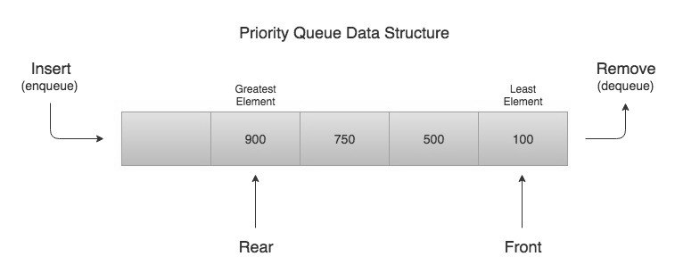
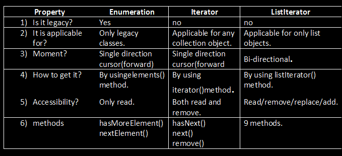
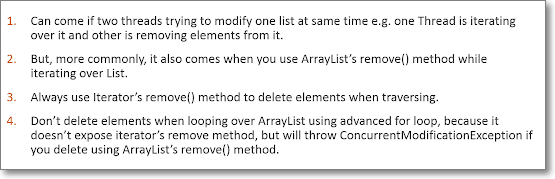
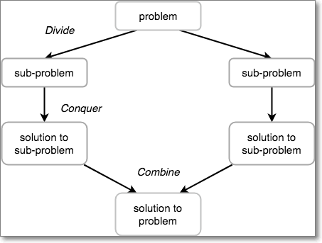
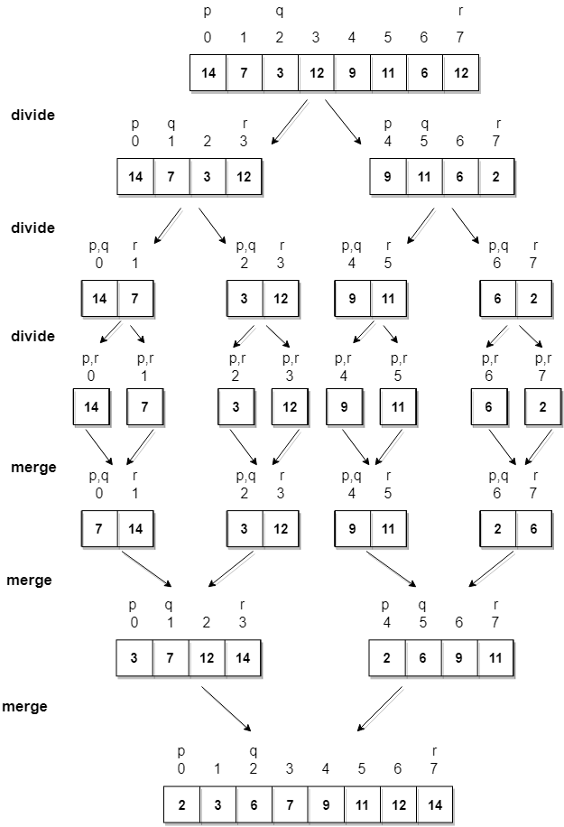
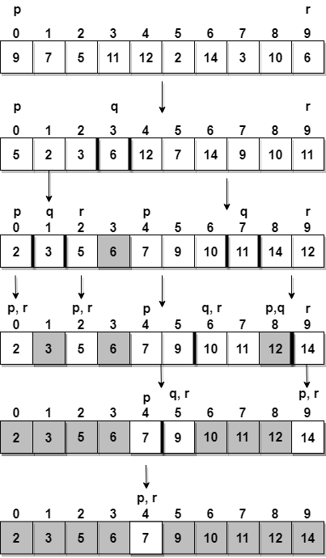
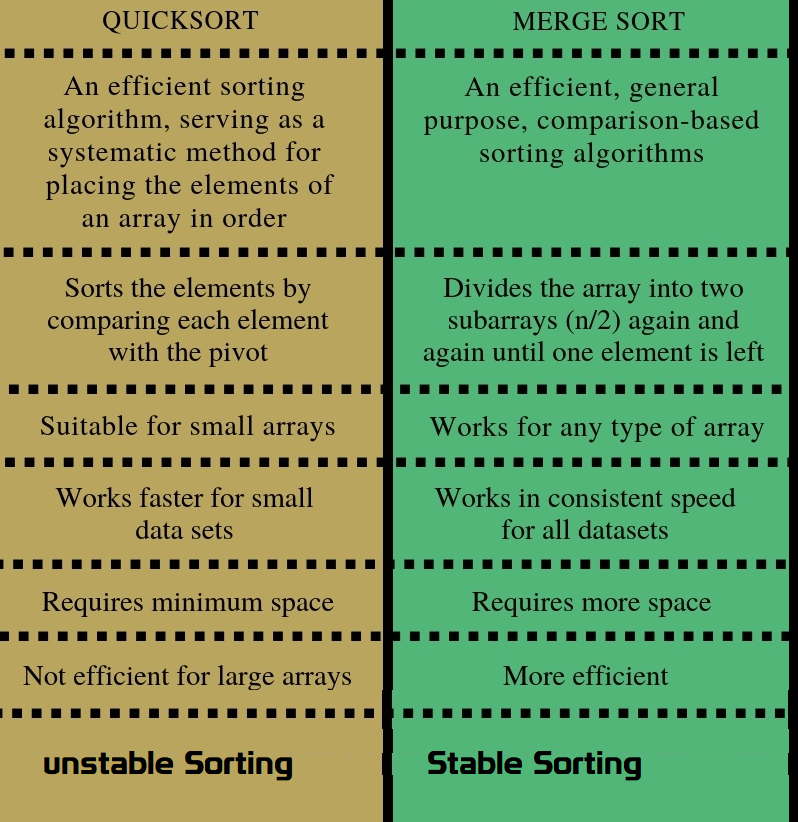

Collections
Java Collections class
Java collection class is used exclusively with static methods that operate on or return collections. It inherits Object class.
boolean addAll(Collection c, T… elements): This method adds all of the provided elements to the specified collection at once. The elements can be provided as a comma-separated list.
List list = new ArrayList();
Collections.addAll(list, "Apples", "Oranges", "Banana");
list.forEach(System.out::println);
void sort(List list, Comparator c): This method sorts the provided list according to the natural ordering. We can also pass in s Comparator, if we want some custom ordering.
Collections.sort(list);
Collections.sort(list,comparator);
int binarySearch (list,”elemet”) : This method searches the key using binary search in the specified list. The list should be sorted by natural ordering, before calling this method, otherwise, the result will be undefined
System.out.println(Collections.binarySearch(fruits, "Banana"));
System.out.println(Collections.binarySearch(fruits, "Grapes"));
-
Collections.copy(list, fruits); -
Collections.fill(list, "filled with dummy data");: replaces all of the elements of the specified list with the specified element. -
Collections.max(fruits): returns the maximum element in collection according to the natural ordering of elements. -
Collections.reverse(list); -
Collections.unmodifiableList(band) -
Collections.synchronizedCollection(fruits)-
synchronizedSet
-
synchronizedSortedSet
-
synchronizedMap
-
synchronizedSortedMap
-
Java9 Collection Static Factory Methods
List<String> list= List.of("apple","bat");
List<String> list= List.of();
Set<String> set= Set.of("apple","bat");
Set<String> set= Set.of()
Map<Integer,String> emptyMap = Map.of()
Map<Integer,String> map = Map.of(1, "Apple", 2, "Bat", 3, "Cat")
Map<Integer,String> emptyEntry = Map.ofEntries()
Map.Entry<Integer,String> mapEntry1 = Map.entry(1,"Apple")
Map.Entry<Integer,String> mapEntry2 = Map.entry(2,"Bat")
Map.Entry<Integer,String> mapEntry3 = Map.entry(3,"Cat")
Map<Integer,String> mapEntry = Map.ofEntries(mapEntry1,mapEntry2,mapEntry3)
Arrays Class
public static <T> List<T> asList(T… a)
public static void sort(int[] a)
public static int binarySearch(int[] a, int k)
public static boolean equals(int[] a, int[] a2)
Arrays.toString(ar);
static int[] copyOf(int[] original, int newLength);
public static void fill(int[] a, int val)
Comparable and Comparator
Comparator and comparable in Java are two interfaces which is used to implement sorting in Java.
Comparable object is capable of comparing itself(this) with another object. The class itself must implements the java.lang.Comparable interface to compare its instances
Comparator is external to the element type we are comparing. It’s a separate class. We create multiple separate classes (that implement Comparator) to compare by different members.
Comparable interface
It provide single sorting sequence only i.e. you can sort the elements on based on single data member only. For example it may be rollno, name, age or any one of them, not all else.
We use public int compareTo(Object obj): is used to compare the current object with the specified object.
- String class and Wrapper classes implements Comparable interface by default. So if you store the objects of string or wrapper or Date classes in list, set or map, it will be Comparable by default.
Collection.sort(EmpBo): if we pass employee list Objects to the
Collections.sort() method it will throws
Exception in thread "main" java.lang.Error: Unresolved compilation problem:
The method sort(List<T>) in the type Collections is not applicable for the arguments (List<Employee>)
Comparable is an interface defining a strategy of comparing an object with other objects of the same type. This is called the class’s -natural ordering”.so we need to define CompareTo() method
public class Employee implements Comparable<Employee> {
private int id;
private String name;
private double salary;
//Setters/getters
public Employee(int id, String name, double salary) {
super();
this.id = id;
this.name = name;
this.salary = salary;
}
@Override
public int compareTo(Employee o) {
if (this.id < o.id) {
return -1;
} else if (this.id > o.id) {
return 1;
} else {
return 0;
}
}
@Override
public String toString() {
return "Employee [id=" + id + ", name=" + name + ", salary=" + salary + "]";
}
public static void main(String[] args) {
List<Employee> employees = new ArrayList<Employee>();
employees.add(new Employee(105, "Satya", 3000));
employees.add(new Employee(102, "RAJ", 2000));
employees.add(new Employee(104, "Madhu", 5000));
employees.add(new Employee(101, "Srini", 1000));
employees.add(new Employee(103, "Vinod", 4000));
System.out.println("Before : " + employees);
Collections.sort(employees);
System.out.println("After : " + employees);
}
}
Before : [Employee [id=105, name=Satya, salary=3000.0], Employee [id=102, name=RAJ, salary=2000.0], Employee [id=104, name=Madhu, salary=5000.0], Employee [id=101, name=Srini, salary=1000.0], Employee [id=103, name=Vinod, salary=4000.0]]
//See, here we don’t have TreeSet(Comparable) to pass implemented Comparable, so that is not sorted. So need to use collections.sort().
//If use Comparator, no need to call the collections.sort(),because it will accept TreeSet(Comparrtor)
After : [Employee [id=101, name=Srini, salary=1000.0], Employee [id=102, name=RAJ, salary=2000.0], Employee [id=103, name=Vinod, salary=4000.0], Employee [id=104, name=Madhu, salary=5000.0], Employee [id=105, name=Satya, salary=3000.0]]
Now, suppose we want sort Employees by their salary and names & also Default comparable method also Should there. In this case using comparable we get only one chance to implement the compareTo() method. The solution is using Comparator
Comparator Interface
Comparator interface compare(Object o1, Object o2) method need to be
implemented that takes two Object argument
class EmpName implements Comparator<Employee> {
public int compare(Employee o1, Employee o2) {
return o1.getName().compareTo(o2.getName());
};
}
class EmpSalary implements Comparator<Employee> {
public int compare(Employee o1, Employee o2) {
if (o1.getSalary() < o2.getSalary()) {
return -1;
} else if (o1.getSalary() > o2.getSalary()) {
return 1;
}
return 0;
}
}
public class Employee implements Comparable<Employee> {
private int id;
private String name;
private double salary;
//Setters & Getters
public Employee(int id, String name, double salary) {
super();
this.id = id;
this.name = name;
this.salary = salary;
}
@Override
public int compareTo(Employee o) {
if (this.id < o.id) {
return -1;
} else if (this.id > o.id) {
return 1;
} else {
return 0;
}
}
@Override
public String toString() {
return "Employee [id=" + id + ", name=" + name + ", salary=" + salary + "]";
}
public static void main(String[] args) {
List<Employee> employees = new ArrayList<Employee>();
employees.add(new Employee(105, "AAA", 3000));
employees.add(new Employee(102, "ZZZ", 2000));
employees.add(new Employee(104, "BBB", 5000));
employees.add(new Employee(101, "DDD", 1000));
employees.add(new Employee(103, "CCC", 4000));
System.out.println("Before : " + employees);
Collections.sort(employees);
System.out.println("ByID :\n " + employees);
//Now we can Sort our Emplyees based on Multiple Sorting(EmpName, EmpSaltry)
Collections.sort(employees, new EmpName());
System.out.println("EmpName : \n "+employees);
Collections.sort(employees, new EmpSalary());
System.out.println("EmpSalary : \n "+employees);
}
}
------------------------------------------
Before : [Employee [id=105, name=AAA, salary=3000.0], Employee [id=102, name=ZZZ, salary=2000.0], Employee [id=104, name=BBB, salary=5000.0], Employee [id=101, name=DDD, salary=1000.0], Employee [id=103, name=CCC, salary=4000.0]]
ByID :
[Employee[id=101, name=DDD, salary=1000.0], Employee [id=102, name=ZZZ, salary=2000.0], Employee [id=103, name=CCC, salary=4000.0], Employee [id=104, name=BBB, salary=5000.0], Employee [id=105, name=AAA, salary=3000.0]]
EmpName :
[Employee[id=105, name=AAA, salary=3000.0], Employee [id=104, name=BBB, salary=5000.0], Employee [id=103, name=CCC, salary=4000.0], Employee [id=101, name=DDD, salary=1000.0], Employee [id=102, name=ZZZ, salary=2000.0]]
EmpSalary :
[Employee[id=101, name=DDD, salary=1000.0], Employee [id=102, name=ZZZ, salary=2000.0], Employee [id=105, name=AAA, salary=3000.0], Employee [id=103, name=CCC, salary=4000.0], Employee [id=104, name=BBB, salary=5000.0]]
-
Comparable interface can be used to provide single way of sorting whereas Comparator interface is used to provide different ways of sorting.
-
For using Comparable, Class needs to implement it whereas for using Comparator we don’t need to make any change in the class, we can implement it in outside.
-
Comparable interface is in java.lang package whereas Comparator interface is present in java.util package.
-
We don’t need to make any code changes at client side for using Comparable, Arrays.sort() or Collection.sort() methods automatically uses the compareTo() method of the class. For Comparator, client needs to provide the Comparator class to use in compare() method.
PriorityQueue :
https://www.callicoder.com/java-priority-queue/
A Queue in Java is just an interface. We need a concrete implementation of the Queue interface to work with, in our programs. LinkedList class implements the Queue interface and therefore it can be used as a Queue.
The process of adding an element at the end of the Queue is called Enqueue, and the process of removing an element from the front of the Queue is called Dequeue.
A priority queue in Java is a special type of queue wherein all the elements are ordered
-
as per their natural ordering using Comparable or
-
based on a custom Comparator supplied at the time of creation.
The front of the priority queue contains the least element according to the specified ordering, and the rear of the priority queue contains the greatest element.

Priority Queue Data Structure Example in Java
So when you remove an element from the priority queue, the least element according to the specified ordering is removed first.
public class Demo {
public static void main(String[] args) {
Queue<Integer> q = new PriorityQueue<>();
q.offer(400);
q.add(200);
q.add(700);
q.add(100);
q.add(500);
while (!q.isEmpty()) {
System.out.println(q.remove());
}
}
}
100
200
400
500
700
Let’s say that we need to create a priority queue of String elements in which the String with the smallest length is processed first.
We can create such a priority queue by passing a custom Comparator that compares two Strings by their length
Since a priority queue needs to compare its elements and order them accordingly, the user defined class must implement the Comparable interface, or you must provide a Comparator while creating the priority queue. Otherwise, the priority queue will throw a ClassCastException when you add new objects to it.
Difference between poll() and remove() method?
Both poll() and remove() take out the object from the Queue but if poll() fails then it returns null but if remove() fails it throws Exception.
Ways that you could sort a collection?
use the Sorted collection like TreeSet or TreeMap or you can sort using
the ordered collection like a list and using Collections.sort() method
How do you print Array in Java?
array doesn’t implement toString() by itself, just passing an array to System.out.println() will not print its contents but Arrays.toString() will print each element
public class Test {
public static void main(String args[]) {
String a[] = { "a", "b", "c" };
System.out.println(a.toString());
// 1. Using Arrays.toString(a)
System.out.println(Arrays.toString(a));
// 2. Using Arrays.asList(a)
System.out.println(Arrays.asList(a).toString());
}
}
[Ljava.lang.String;@15db9742
[a, b, c]
[a, b, c]
What is the difference between ArrayList and Vector ?
Synchronization and Thread-Safe
Vector is synchronized while ArrayList is not synchronized
Performance
Vector is slow as it is thread safe . In comparison ArrayList is fast
Automatic Increase in Capacity
A Vector defaults to doubling size ,ArrayList ,it increases its Array size
by (curr.capcity*3)/2 + 1
Enumeration & iterator
Vector is the only other class which uses both Enumeration and Iterator. While ArrayList can only use Iterator for traversing an ArrayList
Difference between Hashtable and ConcurrentHashMap in Java?
Answer : Both Hashtable and ConcurrentHashMap is used in multi-threaded environment because both are therad-safe but main difference is on performance Hashtable’s performance become poor if the size of Hashtable become large because it will be locked for long time during iteration.
but in case of ConcurrentHaspMap only specific part is locked because concurrent HaspMap works on segmentation and other thread can access the element without iteration to complete. To learn more about how ConcurrentHashMap achieves it’s thread-safety, scalability using lock stripping and non blocking algorithm
Is it possible for two unequal objects to have the same hashcode?
Yes, two unequal objects can have the same hashcode. This is why collision can occur in hashmap. The equal hashcode contract only says that two equal objects must have the identical hashcode, but there is no indication to say anything about the unequal object.
Differences between HashMap and HashTable in Java.
-
HashMap is non synchronized. It is not-thread safe and can’t be shared between many threads without proper synchronization code whereas Hashtable is synchronized.
-
HashMap allows one null key and multiple null values whereas Hashtable doesn’t allow any null key or value.
Which two method you need to implement for key Object in HashMap ?
In order to use any object as Key in HashMap, it must implement equals and hashcode method in Java.
What will happen if we put a key object in a HashMap which is already there ?
if you put the same key again than it will replace the old mapping because HashMap doesn’t allow duplicate keys
difference between Iterator and Enumeration in Java?

Image result for difference between iterator list iterator and enumeration in java
What is the difference between fail-fast and fail-safe Iterators?

.The Collection specific remove() method throws Exception, but not Iterator based remove() method
Collection interface defines remove(Object obj) method to remove objects from Collection. List interface adds another method remove(int index), which is used to remove object at specific index. You can use any of these method to remove an entry from Collection, while not iterating.
If we traversing a if we use Iterator’s remove() method, it will removes current element from Iterator’s perspective. If you use Collection’s or List’s remove() method during iteration then will throw ConcurrentModificationException.
public class FailFastExample {
public static void main(String args[]){
List<String> myList = new ArrayList<String>();
myList.add("1");
myList.add("2");
myList.add("3");
Iterator<String> it = myList.iterator();
while(it.hasNext()){
String value = it.next();
System.out.println("List Value:"+value);
if(value.equals("2"))
myList.remove(value); // ThrowsException
//it.remove(value); // Not Throws Exception
}
}
}
----
List Value:1
List Value:2
Exception in thread "main" java.util.ConcurrentModificationException
at java.util.ArrayList$Itr.checkForComodification(ArrayList.java:901)
at java.util.ArrayList$Itr.next(ArrayList.java:851)
at theads.FailFastExample.main(FailFastExample.java:21)
Avoid ConcurrentModificationException in multi-threaded environment
-
You can lock the list while iterating by putting it in a synchronized block.
-
you can use ConcurrentHashMap and CopyOnWriteArrayListclasses
in single-threaded environment, You can use the iterator remove() function to remove the object from underlying collection object.
How do you Sort objects on the collection? (solution)
Sorting is implemented using Comparable and Comparator in Java and when you call Collections.sort() it gets sorted based on the natural order specified in compareTo() method while Collections.sort(Comparator) will sort objects based on compare() method of Comparator.
Can we replace Hashtable with ConcurrentHashMap? (answer)
Yes, we can replace Hashtable with ConcurrentHashMap and that’s what suggested in Java documentation of ConcurrentHashMap. but you need to be careful with code which relies on locking behavior of Hashtable.
Since Hashtable locks whole Map instead of a portion of Map, compound operations like if(Hashtable.get(key) == null) put(key, value) works in Hashtable but not in concurrentHashMap. instead of this use putIfAbsent() method of ConcurrentHashMap
What is CopyOnWriteArrayList, how it is different than ArrayList and Vector? (answer)
Answer:
Two things,
-
CopyOnWriteArrayList performs operation on creating cloned copy of Arraylist.
-
CopyOnWriteArrayList doesn’t throw any ConcurrentModification, because its acts on cloned copy of Object
CopyOnWriteArrayList is new List implementation introduced in Java 1.5 which provides better concurrent access than Synchronized List. better concurrency is achieved by Copying ArrayList over each write and replace with original instead of locking.
Also CopyOnWriteArrayList doesn’t throw any ConcurrentModification Exception. Its different than ArrayList because its thread-safe and ArrayList is not thread-safe and it’s different than Vector in terms of Concurrency.
Difference between Stable and Unstable Sorting Algorithm - MergeSort vs QuickSort
Merge Sort Algorithm
Merge Sort follows the rule of Divide and Conquer to sort a given set of numbers/elements, recursively, hence consuming less time.

Divide and Conquer
If we can break a single big problem into smaller sub-problems, solve the smaller sub-problems and combine their solutions to find the solution for the original big problem, it becomes easier to solve the whole problem.

Working of Merge Sort algorithm
Algorithm
Merge sort keeps on dividing the list into equal halves until it can no more be divided. By definition, if it is only one element in the list, it is sorted. Then, merge sort combines the smaller sorted lists keeping the new list sorted too.
Step 1 − if it is only one element in the list it is already sorted, return.
Step 2 − divide the list recursively into two halves until it can no more be divided.
Step 3 − merge the smaller lists into new list in sorted order.
Quick Sort
Quick sort is based on the divide-and-conquer approach based on the idea of choosing one element as a pivot element(normally height index value) and partitioning the array around it such that:
-
Left side of pivot contains all the elements that are less than the pivot element
-
Right side contains all elements greater than the pivot
For example: In the array {52, 37, 63, 14, 17, 8, 6, 25}, we take 25 as pivot. So after the first pass, the list will be changed like this.
{6 8 17 14 25 63 37 52}
Hence after the first pass, pivot will be set at its position, with all the elements smaller to it on its left and all the elements larger than to its right. Now 6 8 17 14 and 63 37 52 are considered as two separate subarrays, and same recursive logic will be applied on them, and we will keep doing this until the complete array is sorted.

How Quick Sort algorithm works
Step 1 − Choose the highest index value has pivot
Step 2 − Take two variables to point left and right of the list excluding pivot
Step 3 − left points to the low index
Step 4 − right points to the high
Step 5 − while value at left is less than pivot move right
Step 6 − while value at right is greater than pivot move left
Step 7 − if both step 5 and step 6 does not match swap left and right
Step 8 − if left ≥ right, the point where they met is new pivot

Stable vs Unstable Algorithm
Suppose you need to sort following key-value pairs in the increasing order of keys:
INPUT: (4,5), (3, 2) (4, 3) (5,4) (6,4)
Now, there is two possible solution for the two pairs where the key is the same i.e. (4,5) and (4,3) as shown below:
OUTPUT1: (3, 2), (4, 5), (4,3), (5,4), (6,4)
OUTPUT2: (3, 2), (4, 3), (4,5), (5,4), (6,4)
The sorting algorithm which will produce the first output will be known as stable sorting algorithm because the original order of equal keys are maintained, you can see that (4, 5) comes before (4,3) in the sorted order, which was the original order i.e. in the given input, (4, 5) comes before (4,3) .
On the other hand, the algorithm which produces second output will know as an unstable sorting algorithm because the order of objects with the same key is not maintained in the sorted order. You can see that in the second output, the (4,3) comes before (4,5) which was not the case in the original input.
Some examples of
-
stable algorithms are Merge Sort, **Insertion Sort, Bubble Sort, and Binary Tree Sort**.
-
unstable algorithms are QuickSort, Heap Sort, and Selection sort
If you remember, Collections.sort() method from Java Collection framework uses iterative merge sort which is a stable algorithm.
How much time does it take to retrieve an element if stored in HashMap, Binary tree, and a Linked list? how it change if you have millions of records?
-
HashMap it takes** O(1)** time,because it uses hashing to get element location.
-
Binary tree it takes O(logN) where N is a number of nodes in the tree
-
LinkedList it takes O(n) time where n is a number of element in the list.
Millions of records don’t affect the performance if the data structure is working as expected e.g. HashMap has no or relatively less number of collision or binary tree is balanced. If that’s not the case then their performance degrades as a number of records grows.
can we insert elements in middle of LinkedList?
ListIterator add, remove is possible ?
-
Can iterate over an Collection
-
Remove operation allowed
-
Add operation allowed
-
Backward direction allowed
Public ListIterator listIterator()
boolean hasPrevious()
boolean hasNext()
Operations
---------------------
add(E e)
nextIndex()
previous()
previousIndex()
remove()
next()
set(E e)
public class Test {
public static void main(String[] args) throws InterruptedException {
LinkedList l = new LinkedList<>();
for (int i = 0; i < 10; i++) {
l.add(i);
}
System.out.println(l);
ListIterator iterator = l.listIterator();
while(iterator.hasNext())
{
int next = (int) iterator.next();
System.out.println(next);
if(next>5)
l.add(10);
}
System.out.println(l);
}
}
[0, 1, 2, 3, 4, 5, 6, 7, 8, 9]
0
1
2
3
4
5
6
Exception in thread "main" java.util.ConcurrentModificationException
at java.util.LinkedList$ListItr.checkForComodification(LinkedList.java:966)
at java.util.LinkedList$ListItr.next(LinkedList.java:888)
at Test.main(Test.java:27)
Java Coding Interview Questions
How to Remove Duplicates from Array?
1.Conver Array to List
2.Add List to Set(HashSet/TreeSet) allows Unique values only
public class ArrayDuplicates {
public static void main(String[] args) {
String arr[] = {"B","C","D","A","B","C","D","A","E","E"};
List list = Arrays.asList(arr);
HashSet h = new HashSet(list);
System.out.println("Hashset : "+h);
TreeSet t = new TreeSet(list);
System.out.println("TreeSet : "+t);
}
}
Hashset: [A, B, C, D, E]
TreeSet: [A, B, C, D, E]
How do you get the last digit of an integer?
By using modulus operator(%), number % 10 returns the last digit of the number, for example,
-
2345%10 will return 5
-
567%10 will return 7.
Similarly, division operator(/ ) can be used to get rid of the last digit of a number e.g.
-
2345/10 will give 234
-
567/10 will return 56.
This is an important technique to know and useful to solve problems like number palindrome or reversing numbers
public static int reverse(int number){ //say 12345
int reverse = 0;
int remainder = 0;
int i=1;
do{
remainder = number%10; //To Get last Number
reverse = reverse*10 + remainder; //To add places, 10, 100, 1000
number = number/10; // To remove Last Number
/*reverse = reverse*10 + remainder;
* 5 = 0*10+5
* 54 = 5*10 = 50+4 = 54,
* 543 = 54*10 = 540+3 = 543
* */
System.out.println(i+"---> remainder: "+remainder+", reverse: "+reverse+", number: "+number);
i++;
}while(number > 0);
return reverse;
}
How to Find Missing Number on Integer Array of 1 to 100
METHOD 1(Use sum formula) Algorithm:
- Get the sum of numbers
total = n*(n+1)/2
2 Subtract all the numbers from sum and
you will get the missing number.
class Main { // Function to ind missing number static int getMissingNo (int a[], int n) { int i, total; total = (n+1)*(n+2)/2; for ( i = 0; i< n; i++) total -= a[i]; return total; } /* program to test above function */ public static void main(String args[]) { int a[] = {1,2,4,5,6}; int miss = getMissingNo(a,5); System.out.println(miss); } }
Write code to check a String is palindrome or not? (solution)
A palindrome is those String whose reverse is equal to the original. This can be done by using either StringBuffer reverse() method or by technique demonstrated in the solution here.
Write a method which will remove any given character from a String? (solution)
you can remove a given character from String by converting it into a char[] array and comapare give char with each char of array, remove that & append remaiiing.
public class Test {
public static String remove(String word, char unwanted) {
StringBuilder sb = new StringBuilder();
char[] letters = word.toCharArray();
for (char c : letters) {
if (c != unwanted) {
sb.append(c);
}
}
return sb.toString();
}
public static void main(String[] args) throws InterruptedException {
System.out.println(remove("satya kaveti", 'a'));
}
}
sty kveti
Print all permutation of String? (solution)
for a String of 3 characters like “xyz” has 6 possible permutations, xyz, xzy, yxz, yzx, zxy, zyx
public class Permutation {
public static void permutation(String str) {
permutation("", str);
}
private static void permutation(String prefix, String str) {
int n = str.length();
if (n == 0) System.out.println(prefix);
else {
for (int i = 0; i < n; i++)
permutation(prefix + str.charAt(i), str.substring(0, i) + str.substring(i+1, n));
}
}
public static void main(String args[]) {
permutation("XYZ");
}
}
XYZ
XZY
YXZ
YZX
ZXY
ZYX
How to check if two String Are Anagram? (solution)
two String are called anagram, if they contain same characters but on different order e.g. army and mary, stop and pots etc
public class Anagram {
public static boolean Check(String word1, String word2) {
char[] charFromword1 = word1.toCharArray();
char[] charFromword2 = word2.toCharArray();
Arrays.sort(charFromword1);
Arrays.sort(charFromword2);
return Arrays.equals(charFromword1, charFromword2);
}
public static void main(String args[]) {
System.out.println(Check("stop", "pots"));
System.out.println(Check("army", "mary"));
}
}
true
true
Java Program to print Fibonacci Series
Fibonacci number is sum of previous two Fibonacci numbers fn= fn-1+ fn-2. first 10 Fibonacci numbers are 1, 1, 2, 3, 5, 8, 13, 21, 34, 55.
public class Permutation {
public static void main(String args[]) {
// input to print Fibonacci series upto how many numbers
int number = 10;
System.out.println("Fibonacci series upto " + number + " numbers : ");
// printing Fibonacci series upto number
for (int i = 1; i <= number; i++) {
System.out.print(fibonacci(i) + " ");
}
}
public static int fibonacci(int number) {
if (number == 1 || number == 2) {
return 1;
}
return fibonacci(number - 1) + fibonacci(number - 2); // tail recursion
}
}
Fibonacci series upto 10 numbers :
1 1 2 3 5 8 13 21 34 55
How to find the factorial of a number in Java
the factorial of a number is calculated by formula number*(number -1) till zero and since the value of factorial zero is 1.
public class Permutation {
public static int fact(int number){
int result = 1;
while(number != 0){
result = result*number;
number--;
}
return result;
}
public static void main(String args[]) {
int res = fact(5);
System.out.println("Fianl Factoril is : "+res);
}
}
Fianl Factoril is : 120
Java program Armstrong numbers in the range of 0 and 9999.
An Armstrong number is a number such that the sum of its digits raised to the
third power is equal to the number itself. For example, 153 is an Armstrong
number, since 1**3 + 5**3 + 3**3 = 153.
public class Permutation {
public static void main(String args[]) {
int count = 999;
int index = 0;
for (int i = 0; i < count; i++) {
if (isArmstrongNumber(i)) {
System.out.printf("Armstrong number %d: %d %n", index, i);
index++;
}
}
}
/**
* Java Method to check if given number is Armstrong Number or not
*
* @param number
* @return true, if Armstrong number, false otherwise.
*/
public static boolean isArmstrongNumber(int number) {
int sum = 0;
int copyOfInput = number;
while (copyOfInput != 0) {
int lastDigit = copyOfInput % 10;
sum += (lastDigit * lastDigit * lastDigit);
copyOfInput /= 10;
}
if (sum == number) {
return true;
}
return false;
}
}
Armstrong number 0: 0
Armstrong number 1: 1
Armstrong number 2: 153
Armstrong number 3: 370
Armstrong number 4: 371
Armstrong number 5: 407
Java Program to print 1 to 100 without using loop
public class Permutation {
public static void usingRecursion(int number){
if(number > 1){
usingRecursion(number-1);
}
System.out.println(number);
}
public static void main(String args[]) {
usingRecursion(20);
}
}
Links
https://javarevisited.blogspot.com/2011/06/top-programming-interview-questions.html
https://javarevisited.blogspot.com/2017/07/top-50-java-programs-from-coding-Interviews.html
https://javarevisited.blogspot.com/search/label/Coding%20Interview%20Question?max-results=100